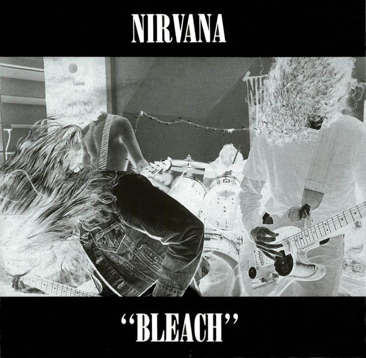
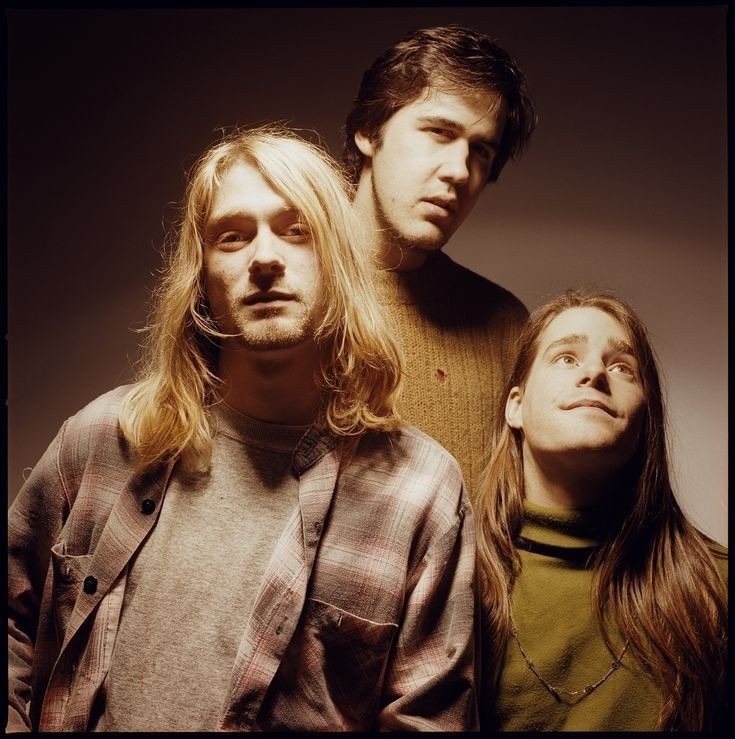

Bleach

| Song Title | Length |
|---|---|
| 1. Blew | 2:54 |
| 2. Floyd the Barber | 2:18 |
| 3. About a Girl | 3:37 |
| 4. School | 2:42 |
| 5. Love Buzz | 3:35 |
| 6. Paper Cuts | 4:06 |
| 7. Negative Creep | 2:55 |
| 8. Scoff | 4:10 |
| 9. Swap Meet | 3:03 |
| 10. Mr. Moustache | 3:23 |
| 11. Sifting | 5:22 |
Kurt Cobain formed Nirvana in 1987 after years of searching for the right musical collaborators. His journey toward the band’s formation began with his involvement in Aberdeen's small punk scene and his early band, Fecal Matter, which he formed with Dale Crover of The Melvins. Although Fecal Matter didn’t last, the demo they recorded circulated among local musicians and caught the attention of Krist Novoselic, whom Kurt had met while hanging around The Melvins' practice space. Kurt had persistently encouraged Krist to listen to the tape, and when Krist finally did, he was impressed and agreed to start a band with Kurt. The two began jamming together, driven by their mutual love for punk rock and underground music. They cycled through several drummers before eventually finding Chad Channing, who joined them for their early gigs. The band experimented with different names, including Skid Row and Pen Cap Chew, before settling on Nirvana—a name Kurt chose because he wanted something simple, unique, and less aggressive than the typical punk band names of the time. In these early days, Nirvana played small shows around Aberdeen and Olympia, performing covers of punk songs along with Kurt’s original material. Their raw sound and intense performances quickly earned them a reputation in the Pacific Northwest's underground music scene, setting the stage for what was to come.

Nirvana began working on their debut album, Bleach, in 1988 after gaining traction in the Pacific Northwest’s underground music scene. The band had developed a strong relationship with Sub Pop, an independent label in Seattle known for championing local grunge bands. With producer Jack Endino, who had previously worked with Soundgarden and Mudhoney, Nirvana entered Reciprocal Recording in Seattle. The sessions were quick and efficient; the entire album was recorded in just 30 hours over several sessions, with a total production cost of only $606.17, which was paid by Jason Everman, a friend of the band who was later credited as a guitarist on the album despite not playing on any of the tracks.
Released on June 15, 1989, Bleach showcased a heavy, sludgy sound influenced by bands like Black Sabbath and The Melvins, combined with the aw energy of punk. Kurt Cobain's lyrics often reflected his frustration, alienation, and disillusionment with society. Songs like Negative Creep, Floyd the Barber, and School embodied the aggressive, angst-ridden sound of the burgeoning grunge scene. However, tracks like About a Girl hinted at Kurt's broader influences, particularly his love for melodic pop bands like The Beatles.
The album received modest attention upon release, selling relatively well for an independent release and gaining Nirvana a dedicated following within the underground rock community. Bleach became Sub Pop's best-selling album at the time, though mainstream success was still out of reach. The band supported the album with relentless touring, including their first trip outside the United States, where they built a reputation for their chaotic, high-energy live performances. While Bleach didn't catapult Nirvana to immediate stardom, it laid the groundwork for their future success and established Kurt Cobain as a compelling songwriter within the grunge movement.